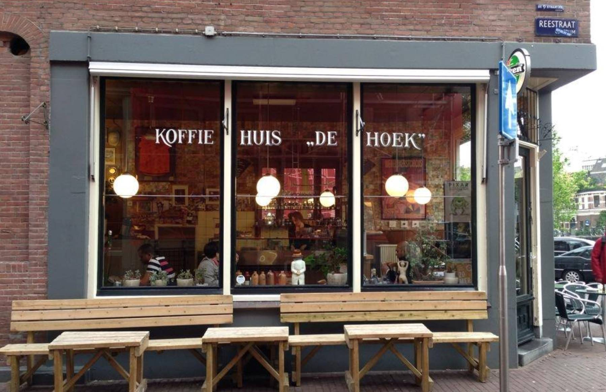
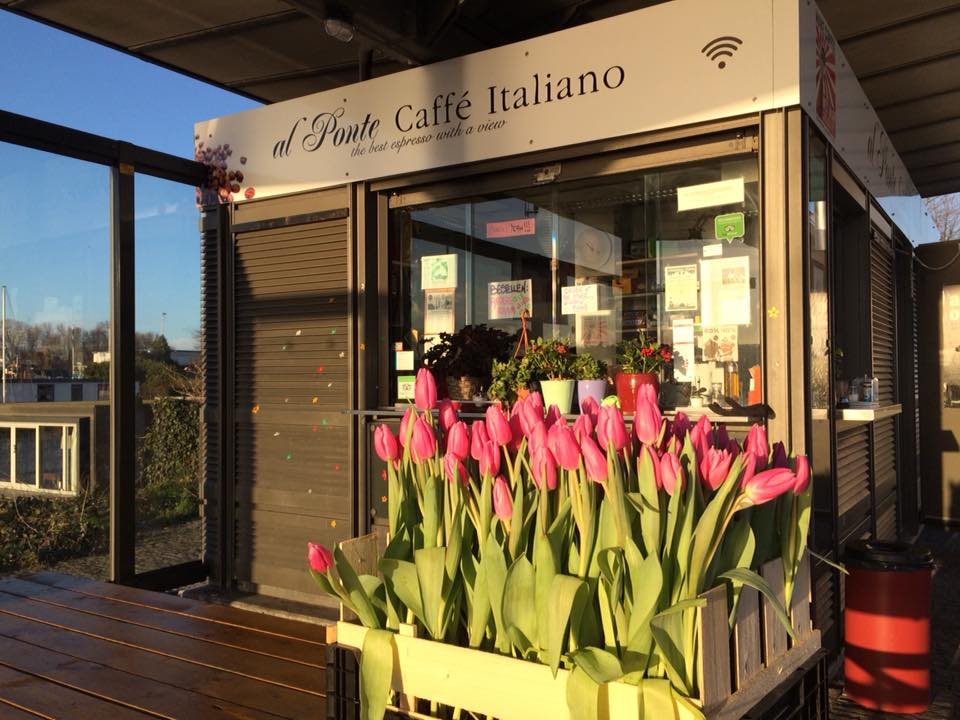
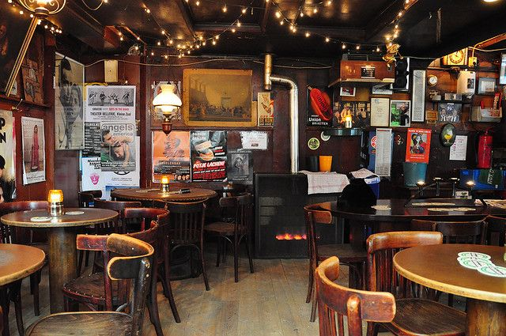

{{amsterdamHeader}}
{{amsterdamSec}}
Screaming Beans
Temat kawy to tutaj nie przelewki. Jak wskazuje nazwa, mimo silnej orientacji na dobrą kawę,
za barem nie spotkasz kawowych snobów, tylko sympatyczną i dobrze przygotowaną obsługę. Jedne z najlepszych oferowanych
tu ziaren pochodzą z Etiopii i Tanzanii, a serce klientów roztapia tutejsze podwójne doppio (dwa pełne szoty espresso).
Jeśli zatrzymujesz się w Hotelu IX, który mieści się tuż nad barem albo jeśli akurat robisz zakupy w ‚Nine Streets‚ – przyjdź
tutaj na smaczne lunchowe tosty.
Adres: Hartenstraat 12, De Negen Straatjes
Godziny otwarcia: poniedziałek-piątek godz. 8:00-17:00, sobota godz. 9:00-17:00, niedziela 10:00-17:00

Koffiehuis De Hoek
Mała, bezpretensjonalna knajpka De Hoek to idealne miejsce, aby zaobserwować cały przekrój społeczny miasta,
który przychodzi tu naładować baterie kofeiną i przekąskami. Usytuowany przy centralnym kanale Prinsengracht na rogu Reestraat,
nieopodal Domu Anny Frank, cieszy się uroczym widokiem z okien. Puszyste naleśniki, obfite kanapki i omlety można kupić w ramach
zestawów śniadaniowych z napojem za 10 euro. Po południu warto tu zajrzeć na holenderski specjał, szarlotkę z dużą ilością jabłek.
Adres: Prinsengracht 341, De Negen Straatjes
Godziny otwarcia: poniedziałek-piątek godz. 8:00-16:30, sobota i niedziela godz. 9:00-17:00

Koko Coffee & Design
Bar kawowy zlokalizowany w designerskim butiku Koko zaspokoi zarówno wielbicieli mody, jak i kawowych smakoszy.
Sprzedają tu wyjątkowe ubrania, akcesoria do wystroju wnętrza i inne ładne przedmioty. Butik znajduje się w starym domu nad
kanałem nieopodal słynnej dzielnicy Czerwonych Latarni. Niech ta lokalizacja Cię nie odstrasza – to idealne miejsce,
żeby uciec od krążących wszędzie grup świętujących wieczory panieńskie i kawalerskie. Propozycje kaw w menu wciąż się zmieniają,
a do tego sprzedają tu pyszną herbatę, na przykład Massai Chai.
Adres: Oudezijds Achterburgwal 145, De Wallen
Godziny otwarcia: poniedziałki: zamknięte, wtorek-piątek godz. 9:00-18:30, sobota godz. 10:00-18:00, niedziela godz. 12:00-18:00

Al Ponte
Trudno wybrać, co w Al Ponte jest najlepsze. Czy to ten domowy, włoski klimat, genialna lokalizacja nad rzeką w
często niedocenianym Amsterdam Noord? Usiądź na zewnątrz, w słońcu, zawieś oko na przepływających łódkach, poczuj zapach
pieczonych ziaren i domowego ciasta cytrynowego. Serwują tu też smaczne dania dla niejedzących mięsa – weźmy choćby grillowane
bakłażany, pomidory i wegańskie pesto. Przed wejściem na prom I powrotem do centrum, koniecznie złap na drogę tutejsze panini
imbottito.
Adres: Meeuwenlaan 2, IJplein, tuż obok miejsca, do którego podpływają promy
(bezpłatny kurs promem z punktu za stacją Amsterdam)
Godziny otwarcia: LATO: poniedziałek-piątek godz. 8:00-18:00, sobota-niedziela godz. 10:00-18:00;
ZIMA: poniedziałek-piątek godz. 8:00-15:00, sobota-niedziela 10:00-16:00

Café Pieper
Okolice Leidesplein to popularne miejsce wśród lokalnych Nocnych Marków, ale ta doceniona “brązowa kawiarnia” n
iewiele ma wspólnego z tutejszą sceną klubową. Niski sufit, okna z witrażami i mieszkający tu kot nadają XVII-wiecznemu
wnętrzu dodatkowego charakteru. Zamów bitterballen (smaożone hoelnderskie przekąski z mięsa i ziemniaków) zanim przystąpisz do
dokonywania wyboru piw podawanych w tradycyjnych kuflach. Wiosną koniecznie usiądź na tarasie i podziwiaj jak kwitną okoliczne
drzewa.
Adres: Prinsengracht 424, Centrum
Godziny otwarcia: poniedziałek-sobota godz. 12:00-1:00, niedziela 14:00-20:00
